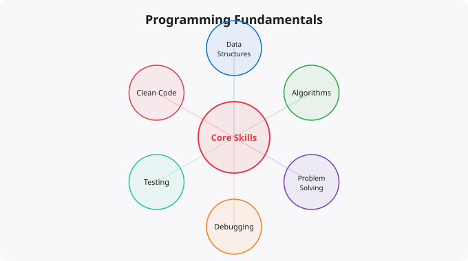

Every experienced programmer who looks back at their learning journey identifies a common turning point: the moment when they stopped thinking about syntax and started thinking about problems. Before that point, programming is a matter of remembering rules and imitating patterns. After it, programming is a creative problem-solving discipline. This guide is about the fundamentals that create that turning point — the underlying concepts and mental models that underpin all good programming, regardless of language.
At the lowest level, every running program is manipulating data stored in computer memory. Variables are names that point to locations in memory where values are stored. When you write x = 5 in Python, you are telling the computer to store the value 5 somewhere in memory and refer to that location using the name x. When you later write x = x + 1, you are reading the value at that memory location, adding 1 to it, and storing the result back. Understanding this — that variables are references to memory locations, not the values themselves — helps explain behaviors that are otherwise confusing, like what happens when you copy a list in Python or pass an object to a function in Java.
Programs execute instructions sequentially by default. Control flow structures allow programs to make decisions (if-else) and repeat work (loops). These two concepts — conditionals and iteration — are the core of all program logic. A conditional says: if some condition is true, do this; otherwise, do that. A loop says: repeat this block of code until some condition is no longer true. Every algorithm, no matter how complex, is ultimately built from these building blocks combined with data structures. Understanding how to think in terms of conditionals and loops — breaking a problem down into the decisions that need to be made and the repetitions that need to happen — is the foundation of algorithmic thinking.
A function is a named, reusable block of code that takes inputs, does something, and optionally returns an output. Functions are the primary mechanism for organizing code, reducing repetition, and managing complexity. Good function design — giving functions clear names that describe what they do, making them do exactly one thing, keeping them short enough to be easily understood — is one of the most important skills in programming. The alternative to good function design is long, complex procedures that are difficult to understand, test, and modify. Functions are also the mechanism that allows programs to be compositional — combining smaller, tested pieces into larger systems.
Data structures are ways of organizing and storing data so that it can be accessed and modified efficiently. The most important data structures for everyday programming are lists (ordered collections of items), dictionaries/maps (collections of key-value pairs), sets (unordered collections of unique items), and stacks and queues (structures that control the order in which items are added and removed). Understanding which data structure is appropriate for a given problem — when to use a list versus a dictionary, when a set is more efficient than a list, what the performance implications of different choices are — is a fundamental programming skill. The difference between using the right data structure and the wrong one can be the difference between a program that runs in milliseconds and one that runs in hours.
Recursion is when a function calls itself as part of solving a problem. This sounds circular, but it is a powerful technique for problems that have a recursive structure — problems where the solution to the whole is defined in terms of solutions to smaller versions of the same problem. Classic examples include computing factorials, traversing tree structures, and many sorting algorithms. Understanding recursion requires accepting that a function can call itself, that there must be a base case that stops the recursion, and that each recursive call should move closer to that base case. Recursion is not always the best solution, but understanding it deeply opens up a class of elegant solutions to problems that are difficult to solve iteratively.
Every algorithm uses some amount of time (how many operations it performs) and space (how much memory it uses). Big O notation is the standard way to describe how these resource requirements scale with input size. Understanding that a linear search through a list is O(n) while a binary search of a sorted list is O(log n), and that this means binary search is dramatically faster for large inputs, is fundamental to writing programs that perform well. You do not need to compute the Big O complexity of every function you write, but you need enough understanding to recognize when your approach has performance problems and to choose more efficient alternatives when they are needed.
Writing code is only half the work. Knowing that it is correct requires testing. Testing at its simplest means running your code with various inputs and checking that it produces the expected outputs. Automated testing — writing test code that can be run repeatedly — is how professional software maintains correctness as it grows and changes. Understanding how to write tests — what to test, how to structure test cases, how to think about edge cases — is a fundamental skill. Code without tests is not done. It is just assumed to work until it demonstrably does not, often in production at an inconvenient moment. Developing the habit of writing tests alongside code is one of the most valuable disciplines a programmer can develop.
Disclaimer:
This article is for educational and informational purposes only.
Programming practices, tools, and technologies evolve over time.
Always refer to official documentation and verified resources
before applying concepts in production environments.
When experienced developers switch programming languages, they are productive surprisingly quickly -- not because languages are all the same, but because the underlying concepts are the same. Variables, control flow, functions, data structures, algorithms, and the ability to break a problem into smaller subproblems. These mental models transfer completely. Learning them in Python means you learn them once and apply them everywhere.
Concept 1: Variables and Memory
Every language has variables that store values
Data types determine what operations are valid
Understanding reference vs value matters in any language
Concept 2: Control Flow
If/else in Python = if/else in Java = if/else in Go
Loops differ in syntax but not in concept
Functions exist in every serious programming language
Concept 3: Data Structures
Arrays/Lists: ordered sequences of values
Dictionaries/Maps: key-value pairs for fast lookup
Sets: unique collections for membership testing
Stacks and Queues: ordered processing patterns
Concept 4: Problem Decomposition
Break big problems into small, solvable subproblems
This skill is the core of software engineering
Languages are just different tools for the same thinking
Concept 5: Abstraction
Functions abstract repeated operations
Classes abstract related data and behaviour
Modules abstract related functionality
APIs abstract implementation from interfaceBeginning programmers agonise over syntax -- where to put the semicolons, whether to use single or double quotes, the exact format of a for loop. Experienced programmers barely think about syntax because they have internalised it and can look up anything they forget. More importantly, modern AI tools mean you can generate syntactically correct code instantly -- what AI cannot provide is the understanding of what the code should do, whether it solves the right problem, and whether it is designed correctly.
The skills that remain valuable regardless of AI assistance are: understanding what a piece of code is trying to accomplish, being able to identify when code has logic errors (not syntax errors), knowing how to decompose a complex requirement into implementable steps, and being able to evaluate whether a solution is well-designed or a fragile workaround. These skills develop through building things, debugging failures, and reading good code -- not through memorising syntax.
The most efficient path: spend 20% of your time reading documentation and tutorials, 80% building things. For each concept you learn, immediately build something using it. Learned about functions? Write five different functions for real tasks. Learned about lists? Write a program that reads a file and processes it as a list. The brain retains what it uses immediately far better than what it passively reads about.
Coding is writing code. Programming is the complete process: understanding requirements, designing a solution, writing code to implement it, testing that it works correctly, and maintaining it over time. Good programmers spend more time thinking than coding. AI is improving coding assistance but the programming process still requires human judgment.
You are ready to build a project as soon as you can write a for loop and a function. Do not wait until you feel ready -- you will never feel fully ready. Start a small project, get stuck, figure out the solution (Stack Overflow, documentation, AI assistance), and continue. Getting stuck and unstuck is how programming skill actually develops.
Command-line tools are excellent for fundamentals: a to-do list manager, a weather app that calls an API, a simple web scraper, a file organiser that sorts files by type, a word frequency counter. These are small enough to finish but complex enough to require real problem decomposition.
Yes. India is one of the fastest-growing tech markets globally. These skills are in high demand across startups, MNCs, and product companies in Bangalore, Hyderabad, Pune, and Mumbai.
Follow official documentation, tech blogs from practitioners, GitHub repositories, and communities like Dev.to, Hashnode, and Reddit. Avoid news that creates urgency without substance.
Official documentation first. Then practical tutorials. Then build real projects. SRJahir Tech articles are written from real production experience — bookmark the series that matches your learning goal.
Consistent daily practice for 3-6 months produces real, usable skills. The key is building projects, not just reading. Every article on SRJahir Tech includes practical examples you can implement today.
Yes. All articles on SRJahir Tech are completely free. No paywalls, no subscriptions. Quality technical education should be accessible to everyone, especially aspiring engineers in India.